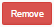
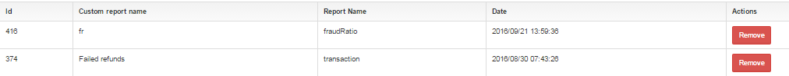

Section: Home Reports Custom
Description:
Custom report is a report which you create by yourself when use 
It's a place where you can find your own reports.
Fields of Custom report
| Field | Description | Example |
|---|---|---|
| Id | Id of the report | 321 |
| Custom report name | name of the report | Test transactions report |
| Report Name | name of the report which is using |
|
| Date | date of creating a report | 2016/08/30 07:43:26 |
| Actions | only one action - remove a report |  |
Screenshot from admin panel :
